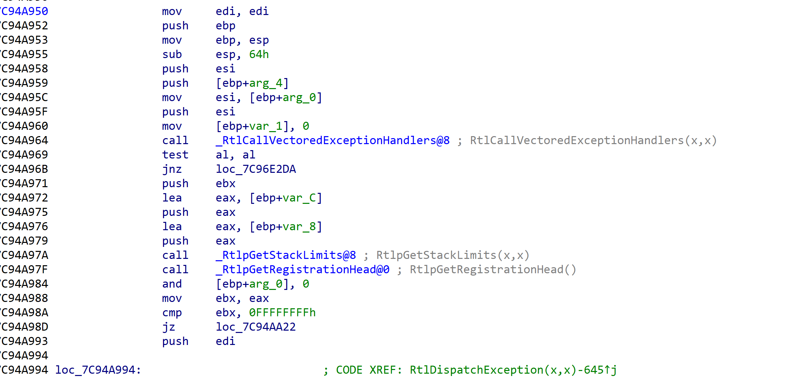

异常处理机制
原来对异常的理解就是seh，FS:[0]
借此机会来好好的学习下
什么是异常
首先异常分为俩种，CPU产生的异常(除0，缺页)和软件模拟产生的异常
CPU产生异常
首先CPU检测到异常->查IDT表->CommonDispatchException->KiDispatchException
CommonDispatchException构造了异常结构体如下，参数是异常类型和发生地址
1 | |
KiDispatchException分发异常，找到对应处理函数去处理
软件模拟产生异常
一般情况下软件模拟产生异常会调用RaiseException函数来自Kernel32.dll
该函数调用ntdll.dll里的RtlRaiseException函数，然后继续往下调用NtRaiseException和KiRaiseException,最后调用KiDispatchException
整体如上图所示
内核层异常处理流程
首先不管是用户态异常还是内核异常，都要通过KiDispatchException函数来进行分发，所以我们主要分析该函数
异常和APC很像，可以看到这边开始备份了，但是我们先分析内核如何处理所以没啥用
首先判断先前模式 0是内核层1是用户层，仅接着判断是否是第一次调用，然后再看是否有内核调试器，没有或者内核调试器不处理就调用RtlDispatchException，返回false的话再次判断是否有内核调试器 有则调用，没有直接蓝屏
下面看看RtlDispatchException,这个就是我们”熟悉”的异常处理了
1 | |
遍历异常链表，没错就是FS:[0]那的，调用异常处理函数，如果被处理了函数返回值为1，如果该异常处理函数不能处理则调用下一个，直到next指针为0xffffffff，如果没有函数能够处理该异常则返回0.
注意这边fs并不是指向PEB，这边是内核处理，fs是kpcr，只是kpcr和peb第一个成员一样都是tib。
用户层异常处理流程
和内核层一样先判断是否第一次调用，然后判断内核调试器是否存在，如果没有，把异常信息发送给三环调试器，如果三环调试器没有处理或者不存在，那么就开始返回三环恢复环境
返回到ntdll中的KiUserExceptionDispatcher，可以看到这边修改了eip
VEH
向量化异常处理
关于这个得分析下_KiUserExceptionDispatcher@8
调用_RtlDispatchException@8处理异常，如果处理成功则_ZwContinue@8进0环回到原来的地方
否则_ZwRaiseException@12分发第二轮异常
来看看_RtlDispatchException@8

_RtlCallVectoredExceptionHandlers@8就是查找VEH链表，如果有的话就调用
1 | |
可见上面示例代码，除零异常处理
修改了ecx为2后发现是50
SEH
SEH就是平时所熟知得结构化异常处理了，CTF中很常见
首先是处理VEH没有的话则SEH，见_RtlpGetStackLimits@8
检测SEH结构是否在堆栈中
继续看_RtlpGetRegistrationHead@0
把异常处理链表头取出
检测是否有效后执行SEH